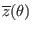
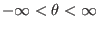
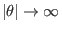
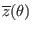
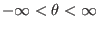
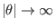
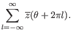
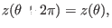

Next: Discussion about the poloidal Up: Misc contents Previous: Double transport barriers pressure
To construct a periodic function about  , we introduces a function
 which is defined over
 and
vanishes sufficiently fast as
 so that the
following infinite summation converge:
, we introduces a function
 which is defined over
 and
vanishes sufficiently fast as
 so that the
following infinite summation converge:
|  | (524) |
|  | (526) |
If we use the right-hand-side of Eq. (525) to represent , then we do not need to worry about the periodic property of (the periodic property is guaranteed by the representation)